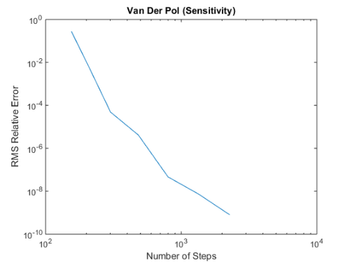
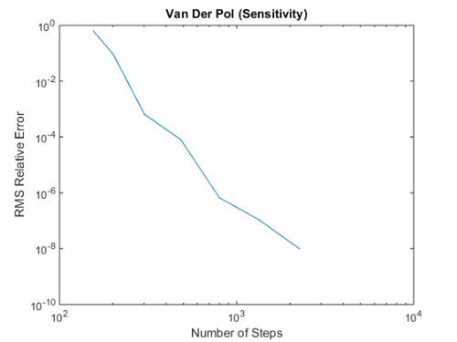
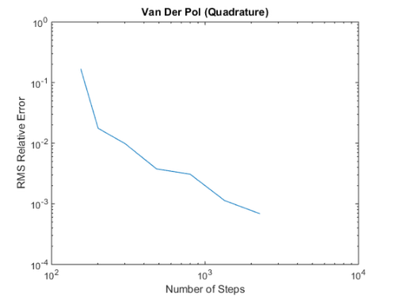
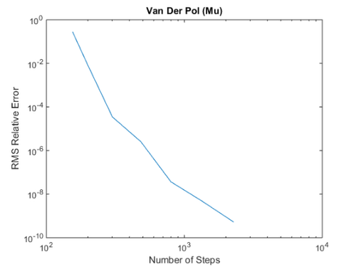
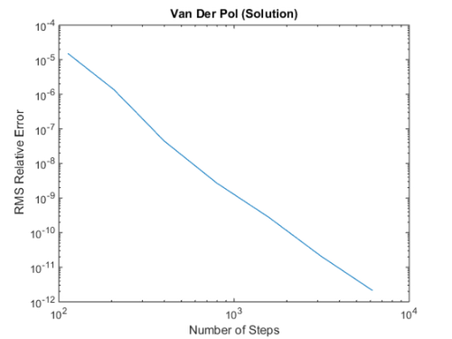
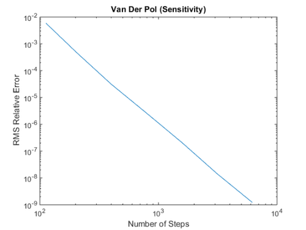
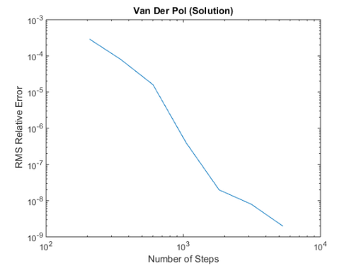
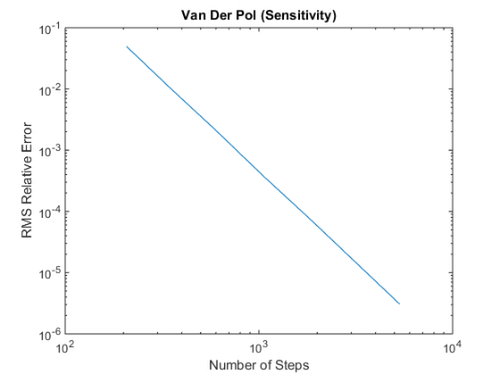

Testing Material: Testing_Simple_ADJ
Up: Testing Material
Contents
- Methodology
- Test Case 1A: MATLODE_ERK_ADJ_Integrator (Default)
- Test Case 1B: MATLODE_ERK_ADJ_Integrator
- Test Case 1C: MATLODE_ERK_ADJ_Integrator
- Test Case 1D: MATLODE_ERK_ADJ_Integrator
- Test Case 2A: MATLODE_RK_ADJ_Integrator (Default)
- Test Case 3A: MATLODE_ROS_ADJ_Integrator (Default)
- Test Case 4A: MATLODE_SDIRK_ADJ_Integrator (Default)
The adjoint test cases make ose of the following ODE test problem.
Ode_DRDP = @vanDerPol_DRDP; Ode_DRDY = @vanDerPol_DRDY; Ode_Function = @vanDerPol_Function; Ode_Hesstr_vec = @vanDerPol_Hesstr_vec; Ode_Jacobian = @vanDerPol_Jacobian; Ode_Jacp = @vanDerPol_Jacp; Ode_Mu = @vanDerPol_Mu; Ode_QFun = @vanDerPol_QFun; Ode_Quadrature = @vanDerPol_Quadrature; Tspan = [0; 20 ]; y0 = [2; -0.66];
We first generate a reference solution using MATLAB's built in ODE integrator ode45.
Option_Ref = odeset('AbsTol', 1e-12, 'RelTol', 1e-12); [T_Ref, Y_Ref] = ode45(Ode_Function,Tspan,y0,Option_Ref); Sens_Ref = [0.1084443916E+01 0.3618905872E-01; 0.7020197127E-01 0.2342715214E-02]'; Sens_Ref_wQuad = [2.0540371773073249 6.7413192511624531E-002; 0.15464588733981441 3.8531773934065920E-002]'; Quad_Ref = [3.5926358045768385; -0.16850417042020102]; Mu_C_Ref = [0.11807133743723834 1.4765956148778949E-002]; Mu_D_Ref = [-2.8113390953907160 0.13283729358593430];
Methodology
In order not overwhelm the reader with very many test cases, we only demonstrate selecting the most common parameters in MATLODE®. For all ODE solvers in MATLODE® adjoint package, denoted by 'A', we perform an absolute and relative tolerance sweep. For test cases 'B', 'C', 'D', we perform adjoint sensitivity analysis given only quadrature term, only mu term and quadrature and mu term respectively. Our motivation for not replicating test cases 'B', 'C' and 'D' for test cases 2, 3 and 4 is to again not overwhelm the reader.
Test Case 1A: MATLODE_ERK_ADJ_Integrator (Default)
Description: Running MATLODE_ERK_ADJ_Integrator with different absolute and relative tolerance values given default option struct.
Option = MATLODE_OPTIONS('Jacobian',Ode_Jacobian,'Lambda',eye(max(size(y0)))); [steps, errorSolution, errorSensitivity ] = TEST_General_Sensitivity(@MATLODE_ERK_ADJ_Integrator,Ode_Function,Tspan,y0,Option,-11,-4,T_Ref,Y_Ref,Sens_Ref); figure(1); loglog(steps,errorSolution); title('Van Der Pol (Solution)'); ylabel('RMS Relative Error'); xlabel('Number of Steps'); figure(2); loglog(steps,errorSensitivity); title('Van Der Pol (Sensitivity)'); ylabel('RMS Relative Error'); xlabel('Number of Steps');
Test Case 1B: MATLODE_ERK_ADJ_Integrator
Description: Running MATLODE_ERK_ADJ_Integrator with different absolute and relative tolerance values given default option struct and quadrature term.
Option = MATLODE_OPTIONS('Jacobian',Ode_Jacobian,'Lambda',eye(max(size(y0))),'QFun',Ode_QFun,'DRDY',Ode_DRDY,'Quadrature',Ode_Quadrature); [steps, errorSolution, errorSensitivity, errorQuad ] = TEST_General_Sensitivity(@MATLODE_ERK_ADJ_Integrator,Ode_Function,Tspan,y0,Option,-11,-4,T_Ref,Y_Ref,Sens_Ref_wQuad,Quad_Ref); figure(1); loglog(steps,errorSolution); title('Van Der Pol (Solution)'); ylabel('RMS Relative Error'); xlabel('Number of Steps'); figure(2); loglog(steps,errorSensitivity); title('Van Der Pol (Sensitivity)'); ylabel('RMS Relative Error'); xlabel('Number of Steps'); figure(3); loglog(steps,errorQuad); title('Van Der Pol (Quadrature)'); ylabel('RMS Relative Error'); xlabel('Number of Steps'); 
Test Case 1C: MATLODE_ERK_ADJ_Integrator
Description: Running MATLODE_ERK_ADJ_Integrator with different absolute and relative tolerance values givendefault option struct and mu term.
Option = MATLODE_OPTIONS('Jacobian',Ode_Jacobian,'Lambda',eye(max(size(y0))),'Jacp',Ode_Jacp,'Mu',Ode_Mu); [steps, errorSolution, errorSensitivity, ~, errorMu ] = TEST_General_Sensitivity(@MATLODE_ERK_ADJ_Integrator,Ode_Function,Tspan,y0,Option,-11,-4,T_Ref,Y_Ref,Sens_Ref,Quad_Ref,Mu_C_Ref); figure(1); loglog(steps,errorSolution); title('Van Der Pol (Solution)'); ylabel('RMS Relative Error'); xlabel('Number of Steps'); figure(2); loglog(steps,errorSensitivity); title('Van Der Pol (Sensitivity)'); ylabel('RMS Relative Error'); xlabel('Number of Steps'); figure(3); loglog(steps,errorMu); title('Van Der Pol (Mu)'); ylabel('RMS Relative Error'); xlabel('Number of Steps');
Test Case 1D: MATLODE_ERK_ADJ_Integrator
Description: Running MATLODE_ERK_ADJ_Integrator with different absolute and relative tolerance values given default option struct and quadrature and mu term.
Option = MATLODE_OPTIONS('Jacobian',Ode_Jacobian,'Lambda',eye(max(size(y0))),'QFun',Ode_QFun,'DRDY',Ode_DRDY,'DRDP',Ode_DRDP,'Quadrature',Ode_Quadrature,'Jacp',Ode_Jacp,'Mu',Ode_Mu); [steps, errorSolution, errorSensitivity, errorQuad, errorMu ] = TEST_General_Sensitivity(@MATLODE_ERK_ADJ_Integrator,Ode_Function,Tspan,y0,Option,-11,-4,T_Ref,Y_Ref,Sens_Ref_wQuad,Quad_Ref,Mu_D_Ref); figure(1); loglog(steps,errorSolution); title('Van Der Pol (Solution)'); ylabel('RMS Relative Error'); xlabel('Number of Steps'); figure(2); loglog(steps,errorSensitivity); title('Van Der Pol (Sensitivity)'); ylabel('RMS Relative Error'); xlabel('Number of Steps'); figure(3); loglog(steps,errorQuad); title('Van Der Pol (Quadrature)'); ylabel('RMS Relative Error'); xlabel('Number of Steps'); figure(4); loglog(steps,errorMu); title('Van Der Pol (Mu)'); ylabel('RMS Relative Error'); xlabel('Number of Steps');
Test Case 2A: MATLODE_RK_ADJ_Integrator (Default)
Description: Running MATLODE_RK_ADJ_Integrator with different absolute and relative tolerance values given default option struct.
Option = MATLODE_OPTIONS('Jacobian',Ode_Jacobian,'Lambda',eye(max(size(y0)))); [steps, errorSolution, errorSensitivity ] = TEST_General_Sensitivity(@MATLODE_RK_ADJ_Integrator,Ode_Function,Tspan,y0,Option,-11,-4,T_Ref,Y_Ref,Sens_Ref); figure(1); loglog(steps,errorSolution); title('Van Der Pol (Solution)'); ylabel('RMS Relative Error'); xlabel('Number of Steps'); figure(2); loglog(steps,errorSensitivity); title('Van Der Pol (Sensitivity)'); ylabel('RMS Relative Error'); xlabel('Number of Steps'); 
Test Case 3A: MATLODE_ROS_ADJ_Integrator (Default)
Description: Running MATLODE_ROS_ADJ_Integrator with different absolute and relative tolerance values given default option struct.
Option = MATLODE_OPTIONS('Jacobian',Ode_Jacobian,'Lambda',eye(max(size(y0))),'Max_no_steps',400000,'Hesstr_vec',Ode_Hesstr_vec); [steps, errorSolution, errorSensitivity ] = TEST_General_Sensitivity(@MATLODE_ROS_ADJ_Integrator,Ode_Function,Tspan,y0,Option,-8,-4,T_Ref,Y_Ref,Sens_Ref); figure(1); loglog(steps,errorSolution); title('Van Der Pol (Solution)'); ylabel('RMS Relative Error'); xlabel('Number of Steps'); figure(2); loglog(steps,errorSensitivity); title('Van Der Pol (Sensitivity)'); ylabel('RMS Relative Error'); xlabel('Number of Steps'); 
Test Case 4A: MATLODE_SDIRK_ADJ_Integrator (Default)
Description: Running MATLODE_SDIRK_ADJ_Integrator with different absolute and relative tolerance values given default option struct.
Option = MATLODE_OPTIONS('Jacobian',Ode_Jacobian,'Lambda',eye(max(size(y0)))); [steps, errorSolution, errorSensitivity ] = TEST_General_Sensitivity(@MATLODE_SDIRK_ADJ_Integrator,Ode_Function,Tspan,y0,Option,-11,-4,T_Ref,Y_Ref,Sens_Ref); figure(1); loglog(steps,errorSolution); title('Van Der Pol (Solution)'); ylabel('RMS Relative Error'); xlabel('Number of Steps'); figure(2); loglog(steps,errorSensitivity); title('Van Der Pol (Sensitivity)'); ylabel('RMS Relative Error'); xlabel('Number of Steps');

Authored by Tony D'Augustine, Adrian Sandu, and Hong Zhang. Computational Science Laboratory, Virginia Tech. ©2015 Virginia Tech Intellectual Properties, Inc.